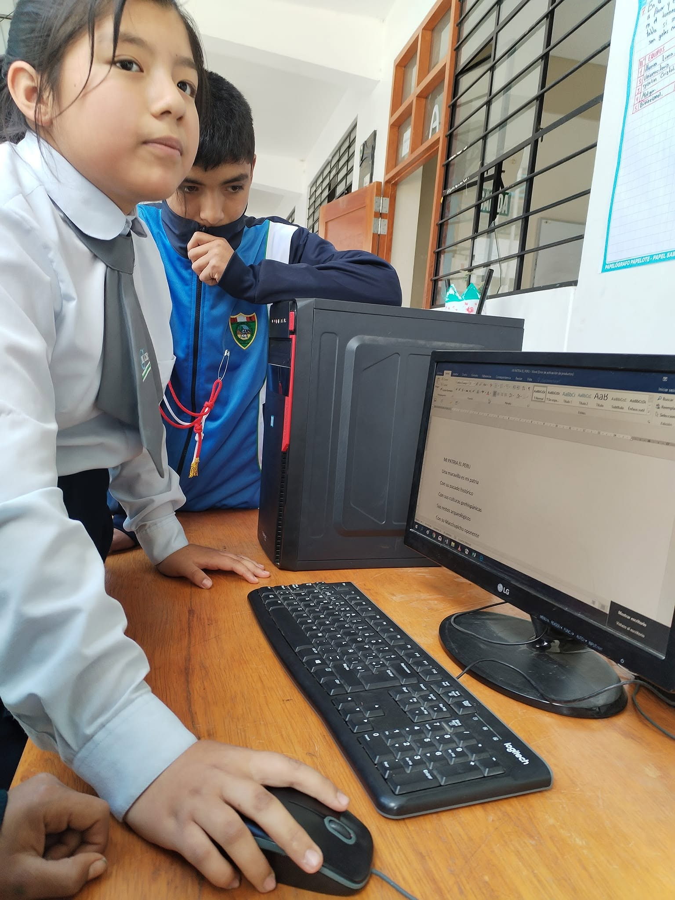

📚
Aprender
Buscar información, practicar habilidades y utilizar recursos digitales para mejorar nuestros conocimientos.
TECNOLOGÍA • EDUCACIÓN • RESPONSABILIDAD
La tecnología puede ayudarnos a aprender, comunicarnos y crear. La clave está en utilizarla de manera responsable, segura y provechosa.
Conocer más ↓
01 — CONOCER PARA UTILIZAR MEJOR
Significa aprovechar dispositivos, internet y herramientas digitales para aprender, comunicarnos y realizar actividades de forma responsable, segura y equilibrada.
Buscar información, practicar habilidades y utilizar recursos digitales para mejorar nuestros conocimientos.
Usar la tecnología para desarrollar ideas, proyectos, presentaciones y soluciones a diferentes problemas.
Comunicarnos con respeto y aprovechar las herramientas digitales para trabajar y colaborar con otras personas.
02 — ¿POR QUÉ ES IMPORTANTE?
Un uso responsable permite aprovechar sus beneficios sin descuidar nuestros estudios, nuestra seguridad, nuestra salud ni la convivencia con los demás.
03 — HÁBITOS DIGITALES
No compartas contraseñas, direcciones ni información personal con desconocidos.
Antes de compartir una noticia o dato, revisa si proviene de una fuente confiable.
Organiza tus horarios para equilibrar el estudio, el descanso, la familia y el entretenimiento.
Comunícate con respeto y evita participar en burlas, acoso o difusión de contenido dañino.
Convierte internet y las herramientas digitales en aliados para tu educación.
Mantén tus equipos actualizados, protégelos con contraseñas y utilízalos correctamente.
04 — TAMBIÉN DEBEMOS EVITAR
Pasar demasiado tiempo frente a una pantalla, descuidar nuestras responsabilidades, compartir información privada o creer todo lo que encontramos en internet puede traer consecuencias.
05 — NUESTRO PROYECTO
Este proyecto busca promover entre los estudiantes una visión responsable de la tecnología, resaltando su importancia para el aprendizaje y la vida cotidiana.
CONCLUSIÓN
Usémosla para aprender, crear, comunicarnos y construir un mejor futuro.